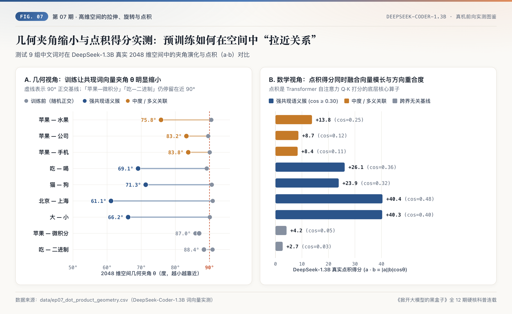

大模型的数学秘密：为什么说千亿参数的本质，只是空间里的“拉伸、旋转”与“点积靠近”？
- 数学视角的极致简化：剥离所有复杂的架构名词，大语言模型那数十亿乃至上千亿个参数，在数学上从头到尾只做两件事——线性变换（Y = XW）与非线性变换（如 SiLU、Softmax）。
- 线性变换的几何直觉：无需死背矩阵乘法的求和公式！在几何空间里，乘以权重矩阵 W，本质上就是抓着语义向量做了一次拉伸（放大）、压缩（缩小）与旋转。
- 非线性变换是深度的灵魂：若只有线性变换，哪怕堆叠 100 层网络，在数学上也会坍缩成单一的一层矩阵（W1 W2 ⋯ Wn = Wtotal）。只有加入 SiLU 等非线性弯折，模型才能刻画复杂的逻辑转折。
- 点积（Dot Product）与语义聚拢：点积 a · b = |a||b|cos θ 是衡量“语义亲密度”的标尺。训练前，2048 维随机向量几乎处处垂直（θ ≈ 90°，点积 ≈ 0）；训练后，常在相似语境结伴出现的词会在空间里彼此靠近、夹角缩小。
一、 破除公式恐惧：千亿参数在数学上只靠“两条腿”走路
很多同学一翻开 AI 教材，看到满页的矩阵求和符号 ∑i=1d xi wij 就心生畏惧。但如果我们站在总体观的高度，剖开本地运行的 deepseek-coder-1.3b-base（共 1,346,471,936 个参数、219 个张量），你会发现一个令人安心的真相：这座 13.5 亿参数的大厦，在数学上只靠“两条腿”走路——线性变换与非线性变换。
上一期我们知道，每个词元（Token）进入模型后都会变成一条 2048 维的语义向量 x，就像高维空间里从原点出发的一支带方向和长度的箭头。当这支箭头穿越 24 层网络时，它经历的所有运算无非是交替进行两步：
底层思想提炼：化繁为简的“数学二分法”。无论大模型架构如何演进，它的数学骨架永远是用线性变换（矩阵乘法）高效重组空间方向，再用非线性变换打破线性束缚、制造逻辑转折。
二、 几何视角看变换：空间里的“拉伸、缩放与旋转”
当一条 2048 维向量 x 乘以 [2048, 2048] 的矩阵 W 时，几何空间里发生了什么？请忘掉“行乘列再相加”的机械算术！在几何上，矩阵乘法就是把向量做了一次空间旋转，加上方向上的拉伸或缩小。
我们把“苹果”（ID 17144）送入 DeepSeek 1.3B 的第 1 层（Layer 0），用探针实测它在经历矩阵线性投影与 SiLU 非线性门控时的真实模长与空间旋转角度：
| 变换阶段 | 数学性质 | 权重维度 | 输入模长 | 输出模长 | 长度伸缩倍数 | 空间旋转角 | 几何物理意义拆解 |
|---|---|---|---|---|---|---|---|
| 0. 原始向量 → RMSNorm | 尺度校准 | [2048] | 8.070 | 6.614 | 0.820x | 0.00° | 方向不变，将箭头长度校准到统一标准起跑线 |
1. 查询投影 (q_proj) | 纯线性变换 | [2048, 2048] | 6.614 | 54.659 | 8.264x (单头 1.135x) | 90.24° (89.38°) | 猛烈拉伸放大，并旋转近直角进入“提问子空间” |
2. 键投影 (k_proj) | 纯线性变换 | [2048, 2048] | 6.614 | 40.950 | 6.191x | 90.84° | 拉伸并旋转到“被检索标签子空间” |
3. 值投影 (v_proj) | 纯线性变换 | [2048, 2048] | 6.614 | 6.642 | 1.004x (相对 0.369x) | 87.11° | 收缩/克制能量尺度，旋转提取核心语义干货 |
4. MLP 门控 (gate → SiLU) | 线性+非线性 | [2048->5504] | 21.654 | 11.803 | 0.545x | 14.24° | 非线性弯折：2118 个负数坐标被压扁（最小值从 -1.695 弯至 -0.277） |
这张实测表揭示了两个核心事实：
第一，同一支“苹果”向量在 q_proj、k_proj、v_proj 三个线性矩阵面前，被抓着箭头做了截然不同的拉伸与旋转：q_proj 把它整体拉长 8.264 倍（单头尺度拉伸 1.135 倍）并旋转了 89.38° ~ 90.24°；而 v_proj 则大幅收缩相对尺度（仅 0.369 倍 / 1.004x），只做 87.11° 转向。正是不同的拉伸与旋转，让同一个词分身出“提问者（Q）”、“标签（K）”和“内容（V）”三种角色！
第二，为什么第 4 步必须加入 SiLU 非线性变换（SiLU(x) = x1 + e−x）？
高中数学告诉我们，把向量先拉伸 2 倍再拉伸 3 倍，等于直接拉伸 6 倍；任何多层线性矩阵连乘，都会直接合并成一个单层矩阵（X W1 W2 ⋯ W24 = X Wtotal）。如果没有非线性函数，24 层网络会瞬间坍缩成 1 层！实测中，当 5504 维向量穿过 SiLU 时，3386 个正数维度被放行，而 2118 个负数维度被强行压扁（极小值从 -1.695 弯折到 -0.277），使向量发生 14.24° 的非线性弯折，从而保住了 24 层深度推理的能力。
三、 点积（Dot Product）与语义聚拢：为什么相似的词会彼此靠近？
高中数学里，两个向量的点积公式为：
从几何上看，点积就是把向量 a 垂直投影到 b 的方向上，用“影子长度”|a|cos θ 乘以 |b|。两支箭头方向越接近（夹角 θ 越小），影子越长，点积越大；当两支箭头垂直（θ = 90°）时，cos 90° = 0，点积为 0。
在高维空间（2048 维）里，随机生成的两支向量天然几乎完全垂直（θ ≈ 90°）。我们实测对比了 DeepSeek 1.3B 训练前（随机初始化）与训练后 9 组词对的夹角与点积得分：
| 词元配对 (w1 ↔ w2) | 词元 ID | 训练前夹角 | 训练前点积 | 训练后真实夹角 θ | 训练后 cos θ | 训练后点积得分 | 几何空间“语义聚拢”规律 |
|---|---|---|---|---|---|---|---|
| 北京 ↔ 上海 | 7203/9329 | 90.95° | -1.31 | 61.10° (61.15°) | 0.4825 | +40.44 (+40.40) | 核心城市高频共现，夹角剧烈缩小近 30° |
| 大 ↔ 小 | 744/1310 | 90.10° | -0.14 | 66.16° | 0.4042 | +40.29 | 反义词共享修饰语境，紧靠在同一语义区 |
| 吃 ↔ 喝 | 3509/9066 | 89.20° | +1.10 | 69.10° (69.08°) | 0.3570 | +26.07 (+26.12) | 饮食动词高频结伴，箭头大幅靠拢 |
| 猫 ↔ 狗 | 15474/12417 | 90.67° | -0.92 | 71.31° | 0.3205 | +23.87 | 宠物名词共享上下文，从正交聚拢至 71.3° |
| 苹果 ↔ 水果 | 17144/21965 | 90.54° | -0.76 | 75.80° | 0.2454 | +13.84 (+13.79) | 同属水果语义簇，点积从负数跃升至 +13.84 |
| 苹果 ↔ 公司 | 17144/2804 | 89.63° | +0.52 | 83.24° | 0.1178 | +8.66 | 科技巨头固定搭配，形成第二条引力线 |
| 苹果 ↔ 手机 | 17144/7259 | 90.08° | -0.11 | 83.77° | 0.1084 | +8.37 | 数码产品语义簇，与“苹果”产生显著正投影 |
| 苹果 ↔ 微积分 | 17144/4788 | 85.88° | +5.80 | 86.97° | 0.0528 | +4.19 | 跨界无关词对，保持近乎垂直的陌生距离 |
| 吃 ↔ 二进制 | 3509/2535 | 90.90° | -1.30 | 88.39° (88.37°) | 0.0285 | +2.73 | 跨界无关词对，夹角停在 88.39°，几乎正交 |

四、 语义扩散与引力聚拢：高维星空是如何自我组织的？
为什么“北京”和“上海”、“苹果”和“水果”训练后会自动靠近？因为模型在海量语料里既读到“我爱吃苹果”，又读到“我爱吃水果”。为了在看到“我爱吃___”时同时给两者打出高点积，算法就会像引力一样，把常在相同上下文出现的词向量拉向同一个几何方向！
更妙的是表格里的“苹果”：它在语料里既常和“水果、吃”共现，又常和“公司、手机”共现，因此在空间里被两股引力同时拉扯——它与“水果”夹角缩至 75.8°（点积 +13.84），与“公司”和“手机”夹角也缩至 83.24° 和 83.77°（点积 +8.66、+8.37），而与跨界无关的“吃 ↔ 二进制”则停留在 88.39° 的近乎垂直状态。
底层思想提炼：语义即几何夹角，共现即空间引力。通过把“经常结伴出现的词拉向同一方向”，人类语言的微妙语义关联，被完美翻译成了高维空间里的夹角缩小与点积增大。
从弗斯的“观其伴知其义”到“国王 - 男人 + 女人 = 女王”
1957 年，英国语言学家约翰·弗斯（J.R. Firth）写下了著名格言：“You shall know a word by the company it keeps（观其伴，知其义）。”
56 年后的 2013 年，Google 年轻研究员托马斯·米科洛夫（Tomas Mikolov）设计了 Word2Vec，让神经网络在海量语料上只做一件事：让常常结伴出现的邻居词之间点积越大越好。训练结束后，米科洛夫在终端里做了一个向量加减法测试：拿“国王（King）”的向量减去“男人（Man）”，加上“女人（Woman）”，再去找点积最大的词。屏幕上跳出的第一名，赫然是“女王（Queen）”！人们第一次震撼地发现：当亿万次点积把共现词拉拢在一起时，几何空间竟自发涌现出了代表语义逻辑的平行四边形法则！
既然在词向量表里，“苹果”（ID 17144）只有唯一的一串固定坐标——它既朝“水果”偏了一点（75.8°），又朝“公司”偏了一点（83.24°）。那么当模型读到“我在苹果公司吃了一个苹果”时，刚查表出来的两个“苹果”向量是 100% 完全相同的（cos θ = 1.0000）！
大模型究竟如何通过 24 层网络，把前一个“苹果”变成科技巨头，把后一个变成水果？下一期，我们将亮出学习 Transformer 的终极武器——“分层输入输出追踪法”！
- 3Blue1Brown《线性代数的本质》：推荐观看第 3 集《线性变换与矩阵》与第 9 集《点积与对偶性》，建立满分几何直觉。
- TensorFlow Embedding Projector（
projector.tensorflow.org）：在浏览器里三维旋转并搜索真实词向量星空。 - 动手实验：用 Python 加载 DeepSeek 1.3B 的
embed_tokens.weight，亲手计算任意两个词的点积与空间夹角！
deepseek-coder-1.3b-base（32,256 词表 · 24 层 · 13.46 亿参数）真机前向实测生成。